- to my portfolio
- to my digital playground
- to my creative corner
- to my brain
- to my mess
Fiction writer first, designer second — or maybe the other way around, depending on the week. Either way, it's the same work: making something complicated land without making it smaller than it is. I do that with a team at Brazil's largest pediatric hospital, and on my own in Mosaico, a tool for building stories that began as my thesis and grew into an AI writing companion. My app “Dear Stars” won Apple's WWDC21 Swift Student Challenge — and learning experience design is where all of this is headed.